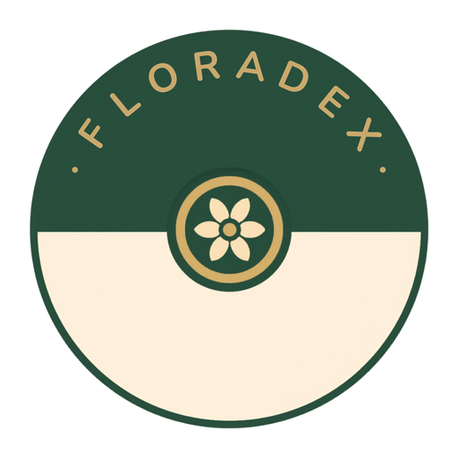

Identifie une fleur
Pointe ton appareil photo sur n'importe quelle fleur sauvage.
Une espèce identifiée débloque sa fiche dans le Pokédex.
Mes médailles 0/8
Identifie des fleurs pour débloquer tes médailles.
— résultats
📸 Photo nette d'une fleur, fond contrasté. Jusqu'à 5 photos pour la même plante.
Debug / réponse brute Pl@ntNet
—
Historique des identifications
⏱
Pas encore d'identification.